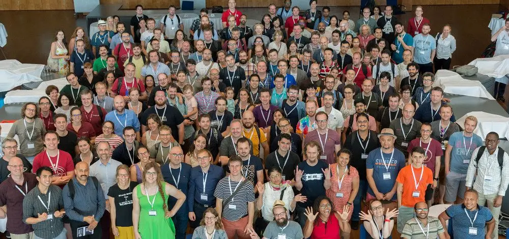
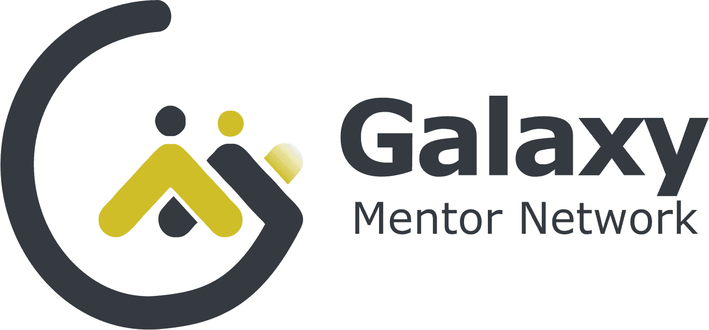
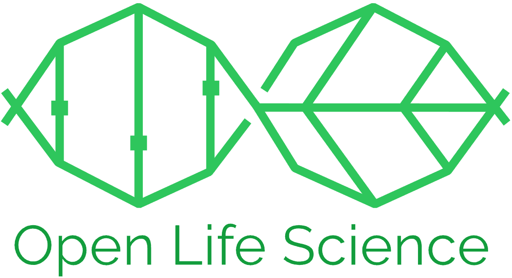

The Galaxy Community
A vibrant community of contributors is the reason this project exists.
The Galaxy team alone cannot possibly maintain enough servers, wrap enough tools, teach enough workshops, implement all needed features, or answer every question on its own. This is why community is vital to our core mission - enabling reproducible research in data-rich sciences and beyond. Members within the Galaxy community are located all around the world and often form subgroups that differ in size (small versus large) and degree of privacy (public versus private). This page highlights these groups.

A major goal of the Galaxy Community is to promote the expansion, sustainability and impact of the Galaxy project, by promoting:
- Growth: Recruiting new members to the “Galaxy Community”. Primarily through conferences, seminars, trainings, publications and other events that expose external individuals to Galaxy, and through collaborations with research communities and projects
- Retention: Encouraging existing members to stay active or to return for future analyses. Primarily through Galaxy processes that minimize friction, e.g having all tools available that are needed for to compute a desired analysis; stable releases that can quickly and reliably execute analysis and return results; well documented code and release notes to synchronize admins, users, developers, and trainers; community standards that maintain a healthy ecosystem; and building engaged user communities.
- Empowerment: Increasing the productivity and capabilities of community members. This includes increasing the compute resources available (e.g. cores/RAM/disk/GPU); optimizing training infrastructures to promote successful events; providing robust software for Galaxy admins working in diverse environments; sharing grant materials and metrics to optimize grant writing and reporting, empowering people in their career progression by enabling and supporting uptake of responsibilities in the community
- Evolve: Identifying new opportunities early to support researchers adopting and exploring new developments and ensure the project stays relevant and state-of-the-art
Best practices for data-intensive science: Promoting open, transparent, reproducible, and collaborative data-driven science that is accessible to everyone regardless of their informatics expertise.
It is important to highlight that “community growth” includes both the quantity and quality of the interactions: recruiting new users is obviously valuable, but retention is just as critical. A goal for growth is to demonstrate the value of the software and community to the audience so they become long-term active participants.
Who are we?
The “Galaxy Community” is composed of several overlapping groups of individuals. It is common for one person to contribute to multiple groups. The major groups include:
Users: Signs in and Uses Galaxy to do something
- New user: signs in and runs a tool with demo data
- Learner: signs in specifically for a training event
- Users & Researchers: sign in occasionally
- Power users: sign in regularly
- “Churned user”: briefly signs in but never returns or leaves following a task completion (eg, workshop, class, research project, degree)
Software tool developers: Develops software and analysis tools that are integrated into Galaxy
- Create scripts and other software that perform data analyses but does not use Galaxy or contribute to software framework development
- Goal is to make it exceedingly simple for these developers to integrate their scripts/tools/visualizations into Galaxy
- Typical progression: aware of Galaxy, appreciates Galaxy, integrates tool(s) into Galaxy, get reward for adding their content to Galaxy
Galaxy framework developers: Contributes to Galaxy codebase and supporting software ecosystem
- Galaxy-funded and community developers (not directly funded by a Galaxy grant)
- Often need assistance to get started as framework code is complex
- Typical Progression: New developer; developer; approved committer; working group lead (https://galaxyproject.org/community/committers/)
Trainers, Support, and Outreach: Promotes the use, development & deployment of Galaxy
- Galaxy-funded and community trainers
- Develops GTN/Hub content, runs workshops, leads classrooms, presents seminars
- Promotes events on social media, Hub, newsletters
- Responds to questions on Matrix/Slack/help.galaxyproject.org/
- Includes both the internal activities (e.g. how to add new features to Galaxy) and external activities (e.g. how to use Galaxy for single cell analysis)
Admins: Sets up and maintains Galaxy server(s) for ongoing use
- Galaxy-funded
- usegalaxy.* (e.g. usegalaxy.org, usegalaxy.eu, usegalaxy.org.au, usegalaxy.ca)
- National servers (e.g. usegalaxy.be)
- Academic institutional servers (e.g. Rockefeller University)
- Private servers (e.g. Astrazeneca)
Leadership: Manages and oversees Galaxy activities
- PIs, PMOs, finance administration, HR
- Grant lifecycle: application, reporting, closeout
- Helps determine project priorities based on funded milestones, and tries to anticipate needs in the future
- Responsible for recruiting personnel, resolving conflicts, rewarding contributions
- Oversee publications, presentations, and other outputs
- Oversee GCC organization
The success of each group depends on the health and success of the other groups. For example:
- trainers are needed to grow and support the community;
- users rely on developers, admins, and trainers to do their work;
- developers need feedback from users & trainers, and need admins to deploy their work;
- admins need developers for robust code;
Consequently the success of the project relies on clear communication and trust between all stakeholders. Critical to the success of this diverse community is creating and articulating incentives for each set of stakeholders to contribute to the Galaxy project.
Galaxy Community Conference
In 2010 the National Science Foundation initiated a yearly gathering of Galaxy users and developers by providing the project with a grant supplement. Since then this gathering has grown into an annual event known as the Galaxy Community Conference (GCC). GCC alternates between North America and elsewhere, and provides a forum for sharing knowledge and building collaborations. There have been over 200 participants every year since 2012.
Set up your own community
Galaxy is composed of plenty of subcommunities, either regional or communities of practice. Check them out and if you do not find one suitable for you, please see this tutorial on how to set up your own.
Galaxy Mentor Network

Galaxy Mentor Network (GMN) program is an initiative by the Galaxy Community to build her members in open source projects.
It is a two-month mentoring program designed for Galaxy community members to come together as mentors and mentees to achieve a goal, share knowledge and expertise, ask questions, receive feedback, network, and most of all, get support from peers(mentors) without having to wait for days for a response from the community via the Help Forum or communication channels.
Interacting communities with Galaxy
Conda and Bioconda

Conda is an open source package management system that is heavily used by Galaxy to manage tool dependencies and installations. Bioconda is a specific channel for Conda that distributes popular bioinformatics software, many of which have been wrapped by the Galaxy community.
Open Life Science

Open Life Science (OLS) is an online mentoring & training program to help individuals and stakeholders in research to become Open Science ambassadors. Participants of this program learn essential knowledge required to create, lead, and sustain an Open Science project, connect with members across different communities, backgrounds, and identities by sharing their experiences and expertise.
Outreachy
Outreachy provides internships in open source and open science for people subject to systemic bias and impacted by underrepresentation in the technical industry where they are living. Outreachy internship projects may include programming, research, user experience, documentation, graphical design, data science, marketing, user advocacy, or event planning.
Well-being and Mental Health Guideline
It is a guideline developed as part of the Outreachy program, which focused on developing a culture of well-being in the community. The guideline addresses well-being and mental health in open-source communities by focusing on common challenges faced in open-source that affect mental health and well-being. It is designed to increase awareness about well-being and mental health in the communities, as well as promote it by providing recommendations and resources to those common challenges. You can access it through this link on Zenodo.
Bioconductor

The mission of the Bioconductor project is to develop, support, and disseminate free open source software that facilitates rigorous and reproducible analysis of data from current and emerging biological assays. Bioconductor uses the R statistical programming language, and is open source and open development. It has two releases each year, and an active user community.
F1000Research
F1000Research enables scientists and scholars to publish their research rapidly, openly, and transparently via an author-centric platform. We publish research across all academic disciplines and in multiple formats, including original articles, data notes, software tool articles and method articles.
F1000Research operates a unique post-publication open peer review process, enabling authors to engage with their reviewers transparently, whilst also making the research available to a global audience as quickly as possible.
A few success stories
Please read the success stories below! They are full of inspiring examples and solutions!
| Special Interest Group | Here is how they did it |
|---|---|
| Biodiversity | The Biodiversity success story from 2022-2025 |
| Climate Science | The Climate Science success story from 2022-2025 |
| Materials Science | The Materials Science success story from 2022-2025 |
| Astrophysics | The Astrophysics success story from 2022-2025 |